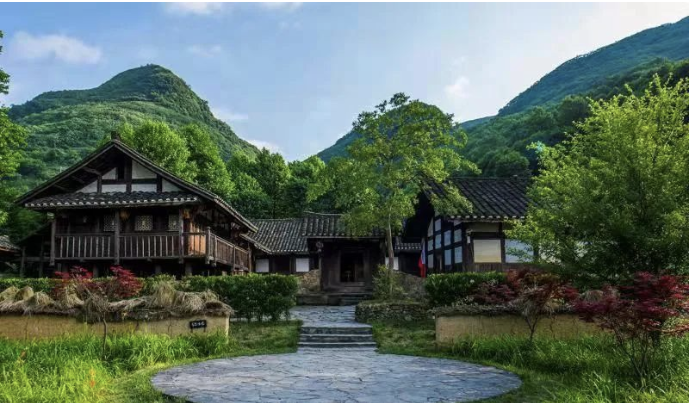

一间旧居，藏着苟坝会议之外的争论与共识。
这处房屋正房为六列五间结构，当地俗称"长五间"。苟坝会议期间，周恩来、朱德及邓颖超、康克清、贺子珍、金维映、徐特立、谢觉哉等入住于此。
3 月 10 日深夜，毛泽东提马灯沿真理小道到此，说服周恩来缓发进攻打鼓新场的作战命令；二人又一同说服朱德。3 月 11 日一早开会，周恩来把大家说服，会议接受毛泽东意见、撤销进攻计划。
这一夜对话，是苟坝会议结局转变的直接动因。